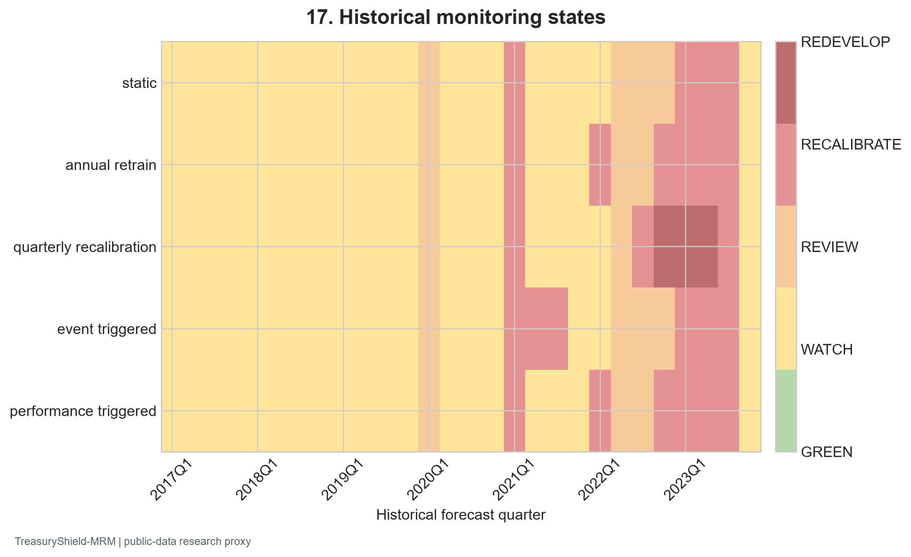
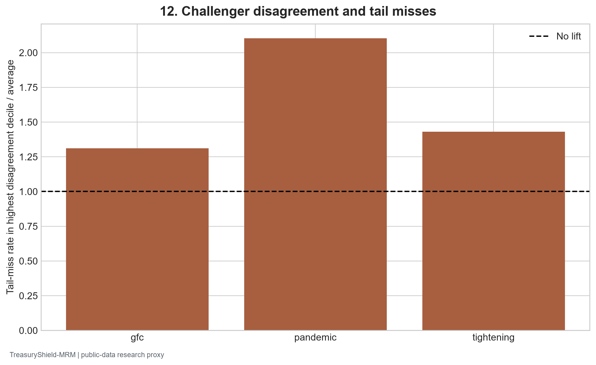

Frozen public-data snapshot fbc0b7b5a2c46fbcc0b5 | Generated 2026-09-27 UTC
For 2017Q1–2023Q4, each forecast uses only labels whose public-availability proxy precedes the current origin. The Q05 LightGBM policy study holds input definition and training sample cap fixed while comparing static, annual, quarterly calibration, event, and performance triggers.
| metric | policy | alert_quarters | calibration_update_quarters | false_alert_quarters_retrospective | fit_count | mean_alert_duration_quarters | mean_alert_lead_quarters_when_prior_alert | mean_detection_delay_quarters_when_detected | missed_bad_quarters_retrospective | q05_coverage | q05_pinball |
|---|---|---|---|---|---|---|---|---|---|---|---|
| annual_retrain | 28.0 | 0.0 | 24.0 | 7.0 | 28.0 | 1.0 | 0.0 | 0.0 | 0.062013 | 0.005325 | |
| event_triggered | 28.0 | 0.0 | 25.0 | 5.0 | 28.0 | 1.0 | 0.0 | 0.0 | 0.052311 | 0.005249 | |
| performance_triggered | 28.0 | 0.0 | 24.0 | 5.0 | 28.0 | 1.0 | 0.0 | 0.0 | 0.061030 | 0.005301 | |
| quarterly_recalibration | 28.0 | 27.0 | 25.0 | 1.0 | 28.0 | 1.0 | 0.0 | 0.0 | 0.055460 | 0.005269 | |
| static | 28.0 | 0.0 | 25.0 | 1.0 | 28.0 | 1.0 | 0.0 | 0.0 | 0.054501 | 0.005216 |

The project-internal states GREEN, WATCH, REVIEW, RECALIBRATE, and REDEVELOP respond to matured rolling coverage, rate/volatility events, and population stability index. False-alert and missed-quarter counts use a disclosed retrospective deterioration label; they are not live performance guarantees.
| metric | report_period | pr_auc_tail_miss | roc_auc_tail_miss | spearman_spread_abs_error | tail_miss_lift_at_top_decile | tail_miss_prevalence | tail_miss_rate_high_disagreement |
|---|---|---|---|---|---|---|---|
| gfc | 0.034937 | 0.515450 | 0.158592 | 1.311090 | 0.031756 | 0.041636 | |
| pandemic | 0.014081 | 0.621772 | 0.198447 | 2.102795 | 0.007583 | 0.015945 | |
| tightening | 0.035509 | 0.528167 | 0.219544 | 1.431241 | 0.029662 | 0.042453 |

Disagreement uses a fixed B1/B5/B7/B8 Q05 spread on identical prelock bank origins. It is an escalation signal only if its lift persists across episodes. Input and residual drift, regime change, and challenger gaps must be reviewed with mature outcomes.
The model inventory identifies owners by role and retains all simple challengers. A material calibration or data-quality finding invokes human review, documented remediation, and a new independent validation before any expanded use. Source restatements, missingness, and H.8 market proxies remain standing monitoring limits.
| model_id | family | panel | owner_role | version | validation_status | monitoring_status | selected |
|---|---|---|---|---|---|---|---|
| B0_unconditional | baseline/challenger | core | Model development; independent validation challenge | 0.1.0 | Final locked comparison and independent review | Historical shadow-policy simulation; no live approval | False |
| B10_gru | baseline/challenger | core | Model development; independent validation challenge | 0.1.0 | Final locked comparison and independent review | Historical shadow-policy simulation; no live approval | False |
| B10_mlp | baseline/challenger | core | Model development; independent validation challenge | 0.1.0 | Final locked comparison and independent review | Historical shadow-policy simulation; no live approval | False |
| B1_peer | baseline/challenger | core | Model development; independent validation challenge | 0.1.0 | Final locked comparison and independent review | Historical shadow-policy simulation; no live approval | False |
| B2_persistence | baseline/challenger | core | Model development; independent validation challenge | 0.1.0 | Final locked comparison and independent review | Historical shadow-policy simulation; no live approval | False |
| B3_ols | baseline/challenger | core | Model development; independent validation challenge | 0.1.0 | Final locked comparison and independent review | Historical shadow-policy simulation; no live approval | False |
| B4_panel_fe | baseline/challenger | core | Model development; independent validation challenge | 0.1.0 | Final locked comparison and independent review | Historical shadow-policy simulation; no live approval | False |
| B5_linear_quantile | baseline/challenger | core | Model development; independent validation challenge | 0.1.0 | Final locked comparison and independent review | Historical shadow-policy simulation; no live approval | False |
| B6_quantile_forest | baseline/challenger | core | Model development; independent validation challenge | 0.1.0 | Final locked comparison and independent review | Historical shadow-policy simulation; no live approval | False |
| B7_xgb_quantile | baseline/challenger | core | Model development; independent validation challenge | 0.1.0 | Final locked comparison and independent review | Historical shadow-policy simulation; no live approval | False |
| B8_lightgbm_quantile | baseline/challenger | core | Model development; independent validation challenge | 0.1.0 | Final locked comparison and independent review | Historical shadow-policy simulation; no live approval | True |
| B9_bayesian_student_t | baseline/challenger | core | Model development; independent validation challenge | 0.1.0 | Final locked comparison and independent review | Historical shadow-policy simulation; no live approval | False |
| RAHQ_C_nn | RAHQ-C proposed | core | Model development; independent validation challenge | 0.1.0 | Final locked comparison and independent review | Historical shadow-policy simulation; no live approval | False |
| RAHQ_C_tree | RAHQ-C proposed | core | Model development; independent validation challenge | 0.1.0 | Final locked comparison and independent review | Historical shadow-policy simulation; no live approval | False |
| RAHQ_nn | RAHQ proposed uncalibrated | core | Model development; independent validation challenge | 0.1.0 | Final locked comparison and independent review | Historical shadow-policy simulation; no live approval | False |
| RAHQ_tree | RAHQ proposed uncalibrated | core | Model development; independent validation challenge | 0.1.0 | Final locked comparison and independent review | Historical shadow-policy simulation; no live approval | False |
New York Fed harmonized Call Reports; FFIEC CDR; FDIC BankFind; Federal Reserve H.8; ALFRED vintages; Chicago Fed FR Y-9C. Exact downloaded URLs, retrieval times, and checksums appear in the raw manifest and desktop study.